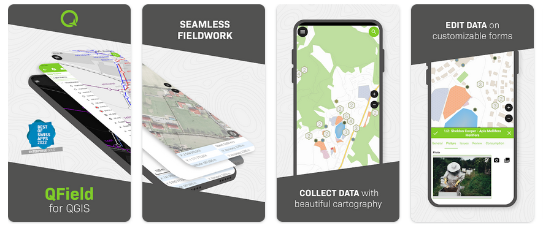

QField¶
モバイルGIS¶
`QField for QGIS <https://qfield.org>`_は、フィールドでの使用に最適化されたシンプルなタッチ操作のインターフェースです。測量用機器との統合によるデータ取得用のプロフェッショナルツールが含まれており、さまざまな高度な属性取得やモバイルマッピング機能にも対応しています。QFieldは、Android、iOS、Linux、MacOS、Windowsで利用可能です。
QGIS と完全に統合されており、2つのプロジェクトの開発は密接に連携しています。
{kind=link}
主要機能¶
- 使いやすいグラフィカル・ユーザー・インターフェース:
地物情報の表示/地物選択
属性の編集/表示/検索
オンザフライ投影変換
美しい地図製作
写真とマルチメディアのキャプチャ
制約によるデータ品質のライブフィードバック
- 多くのベクターおよびラスター形式の画像を簡単に表示
ほとんどのベクター形式: ESRIシェープファイル、MapInfo、SDTSおよびGML、OpenStreetMapベクターを含む
デジタル標高モデル、航空写真、ランドサット画像などのラスター形式
オンラインWebサービス：WMS、WFS、OGC API
- データのエクスポート
PDFへの印刷
- センサーとの統合
内部測位センサー（GNSS）
NMEA経由の外部測位センサー（Bluetooth、UDP、TPC）
NTRIP補正（RTK）は、デバイスに応じて有効にすることが可能
外部センサーとの統合（放射線、ガスなど）
- 同期
QFieldCloud <https://qfield.cloud> 経由でのデータ同期
実装されている標準規格¶
OGC標準に準拠 (WMS、WFS など)
詳細¶
Webサイト: https://qfield.org/
ライセンス: GNU General Public License (GPL) version 2
ソフトウェアバージョン: 3.3.11
対応プラットフォーム: Windows、Linux、Mac、Unix、iOS、Android
コミュニティサポート: https://docs.qfield.org/get-started/support/
商用サポート: https://docs.qfield.org/get-started/support/
注釈
このプロジェクトはOSGeoLive仮想マシンディスク(VMDK)にのみ含まれています